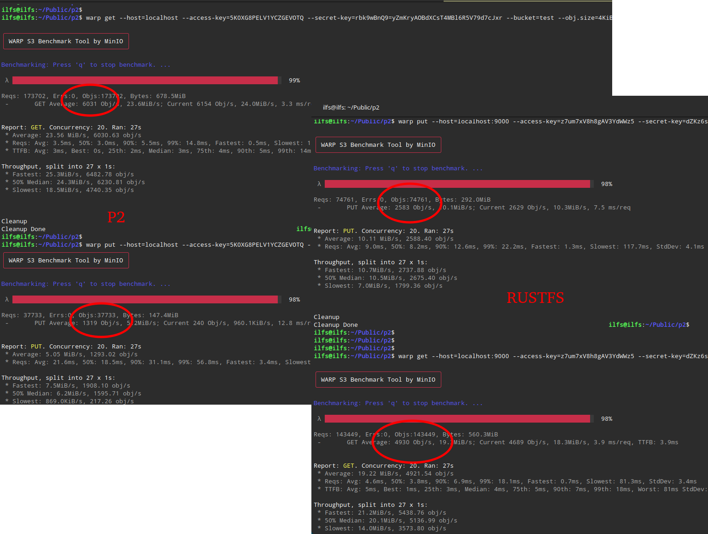

Blistering-fast, S3-compatible object storage built on Python + Rust
Petabyte-scale metadata via LMDB. Thousands of objects per second. Zero-copy reads. No framework overhead.
Drop-in replacement for S3. Works with AWS SDKs, MinIO warp, Cyberduck, and any standard REST tooling.
MD5 and SHA256 hashing offloaded to p2_s3_crypto, a custom Rust extension that releases the Python GIL.
GET operations use Nginx X-Accel-Redirect to serve files via kernel-level sendfile(), bypassing Python entirely.
PUT traffic is intercepted at the raw ASGI layer before Django loads — matching compiled Rust backend performance.
Petabyte-scale metadata stored in LMDB with lock-free reads, batched writes, and zero-copy memory-mapped access.
Modern management interface with Django Ninja, fully typed OpenAPI docs, bucket policies, CORS, ACLs, and lifecycle rules.
Django Ninja + Pydantic
Raw ASGI + Rust Extensions
p2_s3_crypto computes hashes without stalling the event loopMinIO warp tool — 4 KiB objects, 20 concurrent connections, 30s duration, localhost, no TLS.
| Operation | Metric | p2 | RustFS |
|---|---|---|---|
| GET | Avg Throughput | 23.56 MiB/s | 19.22 MiB/s |
| Avg Obj/s | 6,031 | 4,922 | |
| p50 Latency | 3.0 ms | 3.8 ms | |
| p99 Latency | 14.8 ms | 18.1 ms | |
| PUT | Avg Throughput | 5.05 MiB/s | 10.11 MiB/s |
| Avg Obj/s | 1,293 | 2,588 | |
| p50 Latency | 18.5 ms | 8.2 ms | |
| p99 Latency | 56.8 ms | 22.2 ms |
p2 delivers 22% faster GET throughput than RustFS thanks to Nginx zero-copy sendfile(). PUT throughput trades off against Python's write path — the raw ASGI interceptor + Rust hashing keeps it competitive at 1,293 obj/s.

Side-by-side warp benchmark: p2 (left) vs RustFS (right)
bash scripts/run_without_docker.shlocalhost:8787deploy/nginx-host.confP2_DEBUG=true in .env for verbose logsdocker compose up -d --buildlocalhost:8787./storage/For maximum GET performance, pair with Nginx:
# .env
P2_STORAGE__USE_X_ACCEL_REDIRECT=truePoint Nginx at http://127.0.0.1:8787 (Granian). The run_without_docker.sh script generates the config automatically.
aws configure set default.s3.signature_version s3v4
aws --endpoint-url http://localhost s3 mb s3://my-bucket
aws --endpoint-url http://localhost s3 cp file.txt s3://my-bucket/
aws --endpoint-url http://localhost s3 ls s3://my-bucket/
aws --endpoint-url http://localhost s3 presign s3://my-bucket/file.txt57 tests — all passing. Run with: .venv/bin/python manage.py test p2.s3.tests.test_unit p2.s3.tests.test_integration